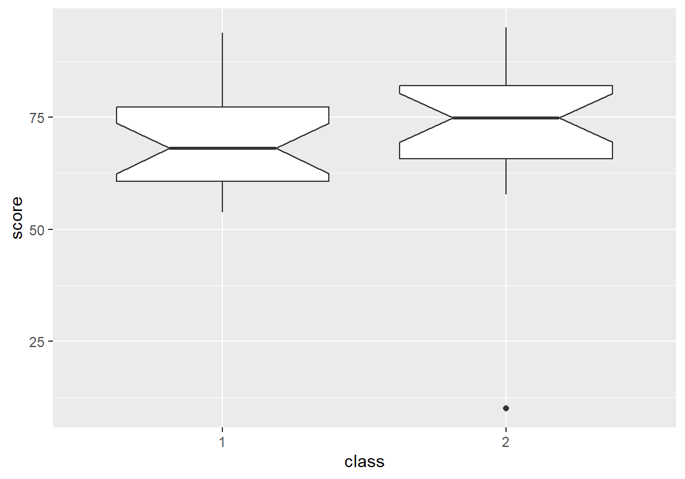
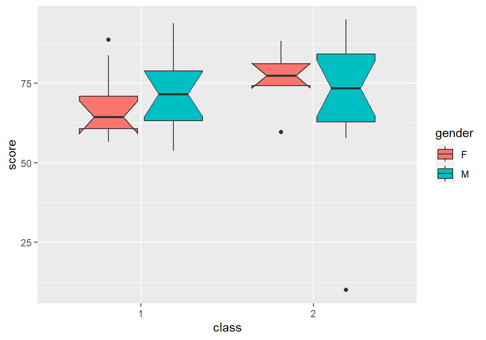
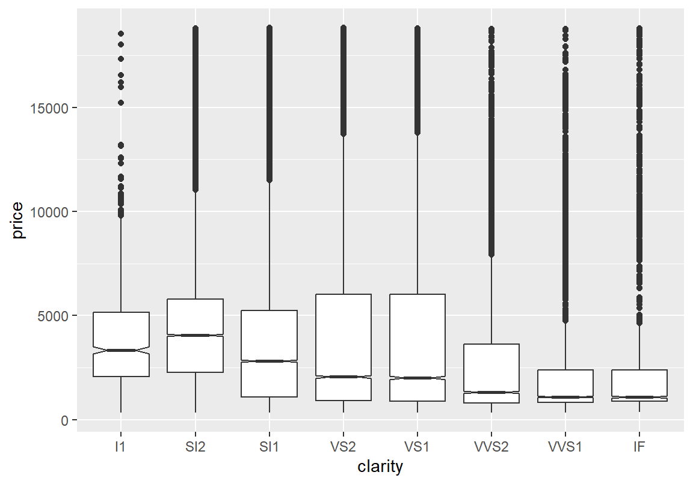
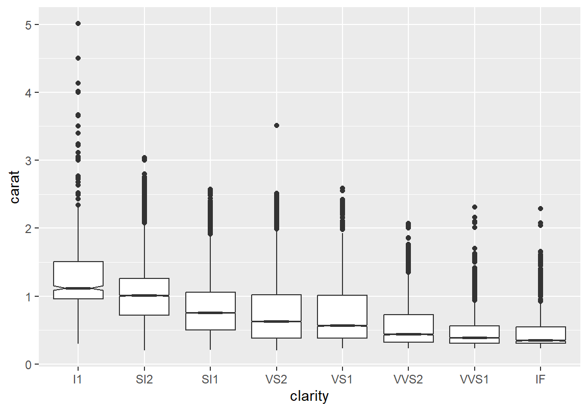
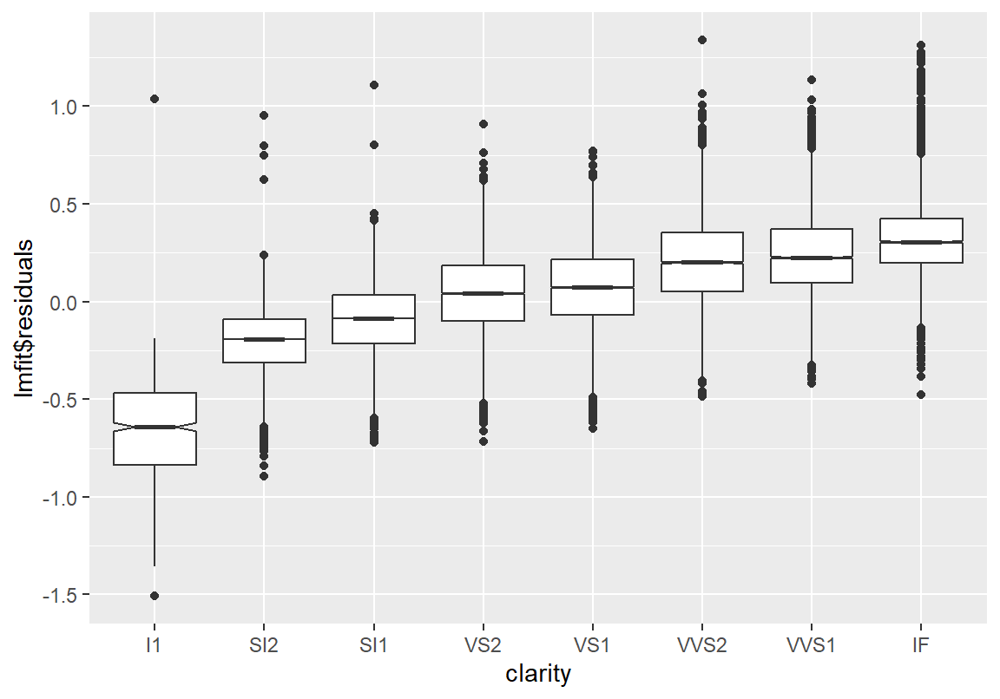
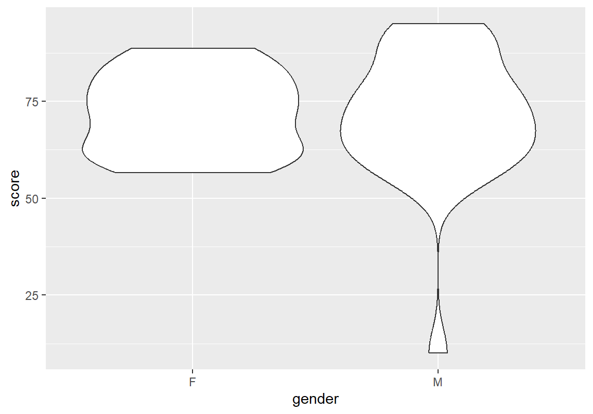
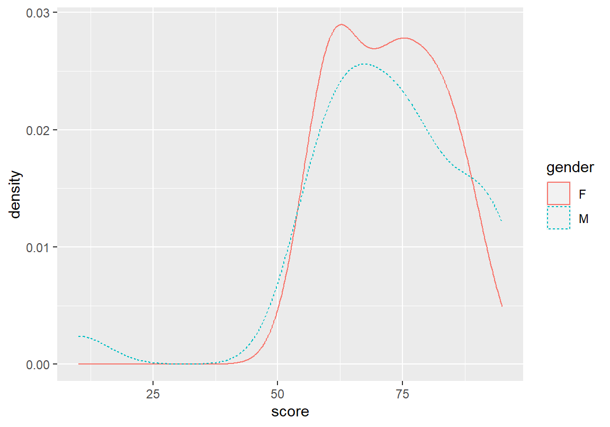
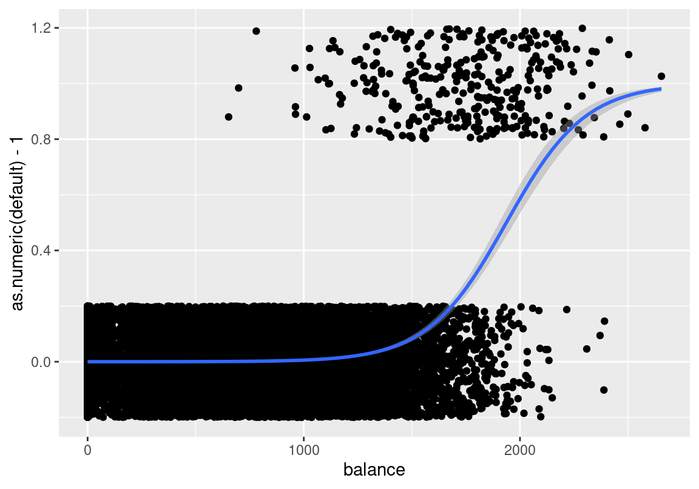

Chapter 9 범주형 변수와 수치형 변수의 관계 분석
통계 데이터 분석을 할 때 course 데이터처럼 범주형 변수와 수치 변수가 같이 있는 경우가 많다. 이러한 경우에 범주형 변수의 값에 따라 수치 변수의 분포가 다른지가 관심 사항일 수 있다. 예를 들어 성별에 따라 총점의 분포에 차이가 있는지, 학년별에 따라 총점의 분포에 차이가 있는지 등이 course 데이터에서는 분석의 대상이 될 수 있다.
9.1 범주별로 수치형 변수에 대해 통계 요약하기
9.1.1 한 범주형 변수를 조건으로 수치형 변수를 통계 요약하기
tapply()와 aggregate()의 기본 문법
범주형 변수와 수치형 변수의 관계를 파악하는 방법 중의 하나가 범주형 변수의 범주별로 수치 변수의 통계량을 비교해 보는 것이다. 이를 수행하는 R 함수의 문법은 다음과 같다.
tapply(데이터$수치형변수, 데이터$범주형변수, 통계함수)
aggregate(수치형변수 ~ 범주형변수, data = 데이터, 통계함수)다음은 tapply()와 aggregate() 함수를 이용하여 course 데이터에서 성별 총점의 평균을 비교한 결과이다. tapply()는 테이블 형식으로 결과를 주는데 반해, aggregate()는 데이터프레임 형식으로 결과를 반환한다.
> library(bizstatp)
> tapply(course$score, course$gender, mean) F M
71.97611 71.11741 > aggregate(score ~ gender, data = course, mean) gender score
1 F 71.97611
2 M 71.11741마찬가지 방법으로 성별로 총점의 중위수, 표준편차, 중앙값 절대편차를 구해보자.
> aggregate(score ~ gender, data = course, median) gender score
1 F 72.665
2 M 72.600> aggregate(score ~ gender, data = course, sd) gender score
1 F 10.47439
2 M 17.35242> aggregate(score ~ gender, data = course, mad) gender score
1 F 14.24779
2 M 12.60210사용자 함수로 여러 통계량으로 한 번에 요약하기
여러 개의 통계량을 범주별로 구할 때는 다음처럼 사용자 함수를 정의하여 통계량이 같이 출력되도록 하는 것이 좋다.
tapply(데이터$수치형변수, 데이터$범주형변수,
function(x) c(이름1 = 통계함수1(x), 이름2 = 통계함수2(x), ....) )
aggregate(수치형변수 ~ 범주형변수,
function(x) c(이름1 = 통계함수1(x), 이름2 = 통계함수2(x), ....) )다음은 aggregate() 함수를 이용하여 성별로 사용자 정의 함수를 사용하여 총점 데이터 수, 평균, 중위수, 표준편자, 중앙값 절대편차를 한 번에 보여주는 예이다.
> aggregate(score ~ gender, data = course, function(x)
+ c(n = length(x), mean = mean(x), median = median(x),
+ sd = sd(x), mad = mad(x))) gender score.n score.mean score.median score.sd score.mad
1 F 18.00000 71.97611 72.66500 10.47439 14.24779
2 M 27.00000 71.11741 72.60000 17.35242 12.60210여학생과 남학생의 평균과 중위수의 차이는 거의 없었지만 남학생의 표준편차가 여학생에 비해 크게 나타난 것을 볼 수 있다. 이는 남학생 성적의 변동성이 컸다는 것을 의미한다. 그러나 예외적인 값에 영향을 잘 받지 않는 중앙값 절대 편차를 보면 오히려 여학생의 점수가 좀 더 펴져 있는 것으로 나타난다. 혹시 시험을 안 본 학생에 의해 남학생의 표준편차가 커진 것은 아닌지를 파악하기 위해 이 학생을 제외하고 성별 비교를 다시해 보자. 예외적인 값에 의해 영향을 받았던 남학생의 평균과 표준편차의 값이 크게 바뀐 것을 확인할 수 있다.
> course_omitted <- na.omit(course)
> aggregate(score ~ gender, data = course_omitted, function(x)
+ c(n = length(x), mean = mean(x), median = median(x), sd = sd(x), mad = mad(x))) gender score.n score.mean score.median score.sd score.mad
1 F 18.00000 71.97611 72.66500 10.47439 14.24779
2 M 26.00000 73.46808 72.98500 12.56943 12.66140수치형 변수의 통계량의 범주별 차이에 대한 가설검정
이상치를 제외하고 살펴보니 남학생의 표준 편차가 감소하였지만 여학생보다 조금 크고 평균도 여학생보다 크게 나왔다. 성별에 따른 평균의 차이는 크지 않았다. 이러한 평균과 표준편차(분산)의 차이가 통계적으로 유의미한지를 가설검정해 볼 수 있다. 가설검정에서 배울 예정인 t.test()와 var.test() 함수를 사용하면 두 집단의 평균과 분산의 차이에 대한 가설검정을 할 수 있다. 가설 검정 결과 p-값이 크게 나와서 남자와 여자의 평균과 분산의 차이는 통계적으로 유의미하지 않음을 볼 수 있다.
> t.test(score ~ gender, data = course_omitted)
Welch Two Sample t-test
data: score by gender
t = -0.42764, df = 40.453, p-value = 0.6712
alternative hypothesis: true difference in means between group F and group M is not equal to 0
95 percent confidence interval:
-8.540634 5.556702
sample estimates:
mean in group F mean in group M
71.97611 73.46808 > var.test(score ~ gender,data = course_omitted)
F test to compare two variances
data: score by gender
F = 0.69443, num df = 17, denom df = 25, p-value = 0.4409
alternative hypothesis: true ratio of variances is not equal to 1
95 percent confidence interval:
0.2942656 1.7696899
sample estimates:
ratio of variances
0.6944266 학년별 총점도 같은 방식으로 분석해 보자. 학년이 올라갈수록 평균과 중위수가 증가하는 경향을 보인다. 표준편차와 중앙값 절대 편차는 3학년이 가장 컸고, 2학년, 4학년 순으로 감소하였다.
> course_omitted <- na.omit(course)
> aggregate(score ~ year, data = course_omitted, function(x)
+ c(n = length(x), mean = mean(x), median = median(x),
+ sd = sd(x), mad = mad(x))) year score.n score.mean score.median score.sd score.mad
1 2 32.000000 71.447812 70.865000 11.284044 13.899375
2 3 9.000000 75.406667 73.370000 13.738011 17.598462
3 4 3.000000 80.250000 80.000000 6.908393 9.681378그러나 4학년 학생의 관측수가 3으로 이러한 차이는 우연하게 발생한 것일 수 있다. 세 집단 이상의 평균의 차이에 대해 가설검정을 하려면 분산분석을 해야 한다. 분산분석은 aov() 함수를 사용한다. 분산분석에 대한 자세한 설명은 가설검정 부분을 참조하기 바란다.
분산분석을 한 결과 학년에 대해 총점이 통계적으로 유의미한 차이를 보이지 않았다.
> aov_result <- aov(score ~ year, data = course_omitted)
> anova(aov_result)Analysis of Variance Table
Response: score
Df Sum Sq Mean Sq F value Pr(>F)
year 2 286.0 143.01 1.056 0.3571
Residuals 41 5552.5 135.43 분반에 따른 성적 차이가 있는지도 살펴보자. 2분반이 1분반 보다 평균과 중위수가 모두 높았지만 통계적으로 유의미한 차이까지는 아니었다.
> aggregate(score ~ class, data = course_omitted, function(x)
+ c(n = length(x), mean = mean(x), median = median(x),
+ sd = sd(x), mad = mad(x))) class score.n score.mean score.median score.sd score.mad
1 1 22.00000 69.93409 68.05000 11.55647 11.72737
2 2 22.00000 75.78136 74.98500 11.25011 11.96458> t.test(score ~ class, data = course_omitted)
Welch Two Sample t-test
data: score by class
t = -1.7005, df = 41.97, p-value = 0.09643
alternative hypothesis: true difference in means between group 1 and group 2 is not equal to 0
95 percent confidence interval:
-12.786661 1.092115
sample estimates:
mean in group 1 mean in group 2
69.93409 75.78136 9.1.2 여러 범주형 변수를 조건으로 수치형 변수를 통계 요약하기
만약 분반에 따라 성별이 총점에 미치는 차이가 있었는지를 확인해 보려면 어떻게 해야 할까? 먼저 성별-분반별로 총점과 관련된 통계량을 확인해 보아야 한다. 이렇게 여러 범주형 변수에 대해 수치형 변수를 통계 요약하려면 다음과 같은 문법을 사용한다.
tapply(데이터$수치형변수, list(데이터$범주형변수1, 데이터$범주형변수), 통계함수)
aggregate(수치형변수 ~ 범주형변수1 + 범주형변수2 + ..., data = 데이터, 통계함수)다음은 성별-분반별로 총점에 대하여 평균을 구한 예이다. tapply() 함수는 범주형 변수별로 행과 열로 나누어 결과를 주는 반면, aggregate() 함수는 각 성별-분반 조합에 대한 결과를 한 행으로 결과를 주는 것을 볼 수 있다.
> tapply(course_omitted$score,
+ list(course_omitted$gender, course_omitted$class), mean) 1 2
F 68.08100 76.84500
M 71.47833 75.17357> aggregate(score ~ gender + class, data = course_omitted, mean) gender class score
1 F 1 68.08100
2 M 1 71.47833
3 F 2 76.84500
4 M 2 75.17357한 범주형 변수를 기준으로 요약할 때와 마찬가지로 사용자 함수를 사용하여 여러 통계량을 한 번에 출력할 수 있다. 여학생의 분반별 점수 차이가 남학생보다 더 큰 것을 볼 수 있다. 그러나 이러한 차이가 통계적으로 유의미 하지는 않은 것으로 보인다.
> aggregate(score ~ gender + class, data = course_omitted, function(x)
+ c(n = length(x), mean = mean(x), median = median(x),
+ sd = sd(x), mad = mad(x))) gender class score.n score.mean score.median score.sd score.mad
1 F 1 10.000000 68.081000 64.390000 10.624309 7.568673
2 M 1 12.000000 71.478333 71.595000 12.525445 11.564280
3 F 2 8.000000 76.845000 77.440000 8.517770 4.744320
4 M 2 14.000000 75.173571 74.230000 12.817588 16.886814> aov_result <- aov(score ~ gender * class, data = course_omitted)
> anova(aov_result)Analysis of Variance Table
Response: score
Df Sum Sq Mean Sq F value Pr(>F)
gender 1 23.7 23.68 0.1759 0.6772
class 1 361.9 361.94 2.6884 0.1089
gender:class 1 67.7 67.65 0.5025 0.4825
Residuals 40 5385.3 134.63 9.2 범주별 수치 변수의 분포 그래프
지금까지 범주별로 수치 변수를 기술통계량으로 용약하는 방법을 설명하였다. 그러나 많은 경우에 범주별로 수치 변수의 분포를 그래프로 표현하는 것이 범주형 변수가 수치 변수에 주는 영향을 파악하기에 더 수월하다.
9.2.1 상자 그래프
한 범주형 변수에 대해 수치형 변수의 상자 그래프 그리기
범주별로 수치형 변수의 분포를 확인하는 가장 대표적인 방법은 상자 그래프를 그리는 것이다. ggplot2의 geom_boxplot() 함수는 수치형 변수에 대한 상자 그래프를 그려주는데, 범주형 변수의 범주 별로 수치형 변수의 상자 그래프를 그릴려면 다음 문법을 사용한다.
ggplot(데이터, aes(x = 범주형변수, y = 수치형변수)) + geom_boxplot()다음은 course 데이터의 총점 변수를 성별로 나누어 상자 그래프를 그린 예이다.
> library(ggplot2)
> ggplot(course, aes(x = gender, y = score)) + geom_boxplot()8.1.2.4 절의 그림 8.1에서 설명한 바와 같이 상자 그래프는 다음과 같은 정보를 나타낸다.
- 상자의 상단이 3분위수, 하단이 1분위수, 상자의 가운데 있는 줄이 중위수를 나타낸다. 따라서 상자의 길이가 IQR을 나타낸다.
- 상자의 위와 아래로 난 수염은 상자에서 \(1.5 \times IQR\) 만큼 떨어지지 않은 관측치 중에서 최대값과 최소값을 나타낸다.
- 상자에서 \(1.5 \times IQR\)보다 더 떨어진 관측값은 수치 변수가 정규분포를 따른다고 가정할 때 매우 예외적인 값이다. 이러한 값은 별도의 점으로 나타낸다.
중위수의 신뢰구간을 표시하기
상자 그래프는 사분위수를 나타내 주므로 분포가 대칭인지 아닌지도 확인할 수 있다. 분포가 대칭이면 상자의 중심선으로부터 위와 아래가 대칭적인 길이로 표현된다.
geom_boxplot() 함수 notch = TRUE로 설정하면 중위수의 95% 신뢰구간을 표시한다.
분반별 총점 분포를 상자그림으로 비교해 보면 분포가 대체로 대칭적이고 중위수의 신뢰구간이 겹쳐 있음을 볼 수 있다.
> ggplot(course, aes(x = class, y = score)) + geom_boxplot(notch = TRUE)
두 범주형 변수에 대해 수치형 변수의 상자 그래프 그리기
두 범주형 변수의 범주 조합에 대해 수치형 변수의 분포를 그리고 싶으면 다음처럼 상자의 채우기 속성(fill)을 또 다른 범주형 변수로 지정을 하면 된다.
ggplot(데이터, aes(x = 범주형변수1, y = 수치형변수, fill = 범주형변수2)) +
geom_boxplot()그러면 fill로 매핑한 범주형 변수 값에 따라 다른 채우기 색상으로 상자 그래프가 나란히 표시된다. 다음은 course 데이터의 총점 변수의 상자 그래프를 분반-성별 범주 조합에 따라 상자 그래프를 그린 예이다. 분반별로 성별 총점의 중위수는 차이를 보이지만 신뢰구간의 많은 부분이 겹쳐져 있어서 통계적으로 유의미한 차이로 보이지 않는다.
> ggplot(course, aes(x = class, y = score, fill=gender)) +
+ geom_boxplot(notch = TRUE)Notch went outside hinges
ℹ Do you want `notch = FALSE`?
Notch went outside hinges
ℹ Do you want `notch = FALSE`?
두 변수의 관계를 살펴볼 때의 주의할 점 - 혼동 효과
다음은 다이아몬드의 투명도에 따라 가격의 분포가 어떻게 달라지는지를 상자 그래프로 그린 예이다. 주목할 점은 다이아몬드의 투명도가 올라갈수록 다이몬드 가격이 오히려 내려가는 것을 볼 수 있다.
> ggplot(diamonds, aes(x = clarity, y = price)) + geom_boxplot(notch = TRUE)
위의 상자 그래프가 보여주는 데이터 경향은 다이아몬드 투명도가 좋아질수록 가격이 오를거라는 직관에 부합되지 않는다. 그렇다면 이러한 경향이 나타나는 이유는 무엇일까? 두 변수만으로 상관성을 분석할 때 주의해야 할 것은 두 변수를 제외한 제 삼의 변수에 의한 혼동 효과(confounding effects)이다. 혼동 효과란 두 변수는 사실 상관성이 없는데, 다른 제 삼의 변수의 영향으로 그래프나 통계량에 마치 두 변수에 상관성이 있는 것처럼 나타나는 효과를 의미한다. 또는 오히려 반대 방향의 상관성이 있는 것처럼 나타나기도 한다.
위의 상자 그래프에서 투명도에 따라 오히려 가격이 하락하는 경향이 나타난 이유는 제 삼의 변수인 다이아몬드 중량(carat)에 의한 혼동 효과가 있기 때문이다. 다이아몬드 가격은 중량에 크게 영향을 받는다. 그런데 투명도가 큰 다이아몬드들은 대부분 중량이 작았기 때문에 투명도보다 가격에 더 큰 영향을 미치는 중량이라는 변수 때문에 마치 투명도가 높으면 가격이 낮은 것처럼 혼동되는 효과를 보인 것인다. 다음처럼 다이아몬드 중량과 투명도의 관계에 대한 상자 그래프를 그려보면 투명도가 높은 다이아몬드는 중량이 낮게 분포되어 있음을 볼 수 있다.
> ggplot(diamonds, aes(x = clarity, y = carat)) + geom_boxplot(notch = TRUE)
따라서 두 변수만의 나타난 관계로 두 변수의 상관성을 속단해서는 안된다. 만약 직관에 부합되지 않는 경향이 보인다면 왜 그런 경향을 보이는지, 혼동 효과가 있는 것은 아닌지에 대한 후속 분석이 필요하다.
그러면 다이아몬드 가격에서 중량의 혼동 효과를 빼고 투명도가 가격에 미치는 영향만 확인해 보려면 어떻게 해야 할까? 다음처럼 가격을 중량에 회귀 분석한 후 남은 잔차를 대상으로 상자 그래프를 그려보면 된다. 그러면 가격 변수에서 중량 변수가 설명한 부분을 제외한 가격의 변동성이 잔차로 남게 되고, 이 변동성이 투명도와 상관성이 있는지 확인할 수 있다.
> lmfit <- lm(log(price) ~ log(carat), data = diamonds)
> ggplot(diamonds, aes(x = clarity, lmfit$residuals)) +
+ geom_boxplot(notch = T)
9.2.2 범주별로 수치형 변수의 분포 모양을 비교하기
상자 그래프는 사분위수와 이상치의 유무를 범주별로 쉽게 비교할 수 있는 장점이 있지만 수치형 변수의 자세한 분포를 확인하는데는 한계를 가진다. 범주별로 자세한 분포를 확인할 때는 여러 가지 그래프를 사용할 수 있다. 각각의 그래프는 자신만의 장단점이 존재한다. 그러므로 데이터에 따라, 분석가가 분석하고자 하는 목적에 따라서 다음에 설명하는 그래프 중 일부를 취사선택하여 사용한다.
바이올린 차트로 비교하기
상자 그림과 비슷한데 범주별 수치형 변수의 확률 밀도를 보여주기 때문에 분포의 차이를 좀 더 자세히 확인할 수 있다. 바이올린 차트를 그리는 문법은 상자 그래프와 동일한데 geom_boxplot() 함수 대신 geom_violine() 함수를 사용하는 점만 다르다.
다음은 course 데이터에서 총점의 성별 차이를 바이올린 차트로 표현한 예이다. 여학생의 점수가 좀더 평평한 형태로 분포되어 있는 것을 확인할 수 있다. 그리고 여학생의 총점 분포에 두 개의 봉우리가 보인다.
> ggplot(course, aes(x = gender, y = score)) + geom_violin()
앞의 그래프에 분반 변수를 추가하여 성별-분반별 총점 분포를 더 자세히 살펴보자. 남학생의 분포는 예외적으로 점수가 낮은 학생을 제외하면 1, 2 분반이 비슷한 반면 여학생은 1분반과 2분반의 봉우리가 서로 달라서 여학생 전체 분포에 두 개 이상의 봉우리를 만들었음을 확인할 수 있다.
> ggplot(course, aes(x = gender, y = score, fill = class)) + geom_violin()
히스토그램으로 비교하기
범주별 수치 변수의 분포의 차이는 히스토그램으로도 확인해 볼 수 있다. 범주형 변수에 따라 측면으로 나누어 히스토그램을 그리는 문법은 다음과 같다.
ggplot(데이터, aes(x = 수치형변수)) + geom_histrogram() +
facet_wrap(~ 범주형변수)다음은 성별로 총점의 히스토그램을 측면으로 나누어 그래프를 그린 예이다.
> ggplot(course, aes(x = score)) + geom_histogram(bins = 15) +
+ facet_wrap(~ gender)그런데 이렇게 측면으로 나누어 그리면 분포의 차이를 비교하기가 어려울 수 있다.
만약 두 히스토그램을 한 그래프에 겹쳐 그려서 범주별 차이를 비교하고자 한다면, geom_histogram()의 채우기 색상(fill)에 범주형 변수를 매핑한 후 position인수를“dodge”`로 설정하면 된다. 그런데 범주별로 절대 빈도수가 서로 다르므로 비교하기 어렵기 때문에 히스토그램을 확률밀도 형태로 그리는 것이 좋다.
ggplot(데이터, aes(x = 수치형변수, y = ..density, fill = 범주형변수)) +
geom_histrogram() 다음은 성별 차이를 보기 위해서 확률 밀도로 총점의 히스토그램을 겹쳐 표현한 예이다.
> ggplot(course, aes(x = score, y = ..density.., fill = gender)) +
+ geom_histogram(position = "dodge", bins = 15)Warning: The dot-dot notation (`..density..`) was deprecated in ggplot2 3.4.0.
ℹ Please use `after_stat(density)` instead.
This warning is displayed once every 8 hours.
Call `lifecycle::last_lifecycle_warnings()` to see where this warning was
generated.Freqpoly 그래프로 비교하기
그런데, 히스토그램을 겹쳐 그리면 범주별로 분포를 보기가 조금 어렵다. 이런 경우 freqpoly 그래프를 그리는 것이 분포를 겹쳐서 살펴보기 좋다. freqpoly 그래프는 히스토그램과 같은 문법으로 데이터를 그래프로 표현하는데 다른 점은 막대가 아니라 선으로 분포를 표현한다는 것이다. 그렇기 때문에 범주형 변수를 fill 속성이 아니라 선의 색상인 color에 매핑을 한다.
ggplot(데이터, aes(x = 수치형변수, y = ..density, color = 범주형변수)) +
geom_freqpoly() > ggplot(course, aes(score, ..density.., color = gender)) +
+ geom_freqpoly(bins = 15)다음은 앞의 그래프를 분반 변수를 기준으로 측면으로 나누어 Freqpoly 그래프를 그려본 것이다. 2분반은 남여의 분포의 위치가 비슷한 곳에 있는데 1분반은 여학생의 점수 분포가 남학생의 분포보다 조금은 아래에 있음을 볼 수 있다.
> ggplot(course, aes(score, ..density.., color = gender)) +
+ geom_freqpoly(bins = 15) +
+ facet_wrap(~ class)확률 밀도 그래프
히스토그램과 freqpoly()는 실제 관측치로 데이터를 확인할 수 있는 장점이 있지만 어떻게 구간을 나눌지에 따라 모양이 크게 변한다. 따라서 확률 밀도 함수를 추정하여 밀도 함수에 대해 그래프를 그려보는 것이 범주별 차이를 파악하기 쉬울 수 있다.
ggplot(데이터, aes(x = 수치형변수, color = 범주형변수, linetype = 범주형변수)) +
geom_density() 다음은 앞서 그린 분반을 기준으로 측면으로 나누어 성별로 총점에 대해 Freqpoly 그래프를 확률 밀도 그래프로 다시 그린 예이다. 남학생의 분포는 분반별 차이가 크지 않은데 여학생은 1분반은 왼쪽으로, 2분반은 오른쪽으로 분포가 치우쳐 있음을 확인할 수 있다.
> ggplot(course, aes(score, color = gender, linetype = gender)) +
+ geom_density() +
+ facet_wrap(~ class)
산점도로 범주형 변수와 수치형 변수의 상관성 분석하기*
산점도는 두 수치형 변수의 관계를 나타낼 때 주로 사용되지만 범주형 변수의 범주가 2개일 때는 범주형 변수와 수치형 변수의 관계를 살펴보기 위해서도 사용될 수 있다.
댜음은 ISLR 패키지의 default 데이터이다. bizstatp 패키지를 설치하였다면 이미 설치가 되어 있을 것이다.
> library(ISLR)
> head(Default) default student balance income
1 No No 729.5265 44361.625
2 No Yes 817.1804 12106.135
3 No No 1073.5492 31767.139
4 No No 529.2506 35704.494
5 No No 785.6559 38463.496
6 No Yes 919.5885 7491.559다음은 신용 잔고(balance)에 따른 채무불이행(default)을 산점도로 표시한 것이다. 채무불이행이 범주형 변수여서 동일한 위치에 데이터가 중복되어서 찍히는 것을 방지하기 위해서 geom_jitter()를 사용하여 데이터를 위아래로 0.2 범위 정도로 임의로 흩뿌렸다. 그리고 geom_smooth() 함수로 로지스틱 회귀 적합선을 그렸다. 신용 잔고가 1,500 달러보다 올라가면 채무 불이행의 확률이 크게 증가함을 볼 수 있다.
> ggplot(ISLR::Default, aes(balance, as.numeric(default) - 1)) +
+ geom_jitter(height = 0.2) +
+ geom_smooth(method = "glm", method.args = list(family = "binomial"))`geom_smooth()` using formula = 'y ~ x'
다음은 학생 여부에 따라 신용잔고가 채무불이행에 어떤 영향을 주는지를 살펴본 그래프이다. 학생이 아닌 경우에 신용 잔고 상승이 채무불이행을 초래할 확률을 더 높이는 것을 볼 수 있다.
> ggplot(ISLR::Default, aes(balance, as.numeric(default) - 1, color = student)) +
+ geom_jitter(height = 0.2) +
+ geom_smooth(method = "glm", method.args = list(family = "binomial"))`geom_smooth()` using formula = 'y ~ x'